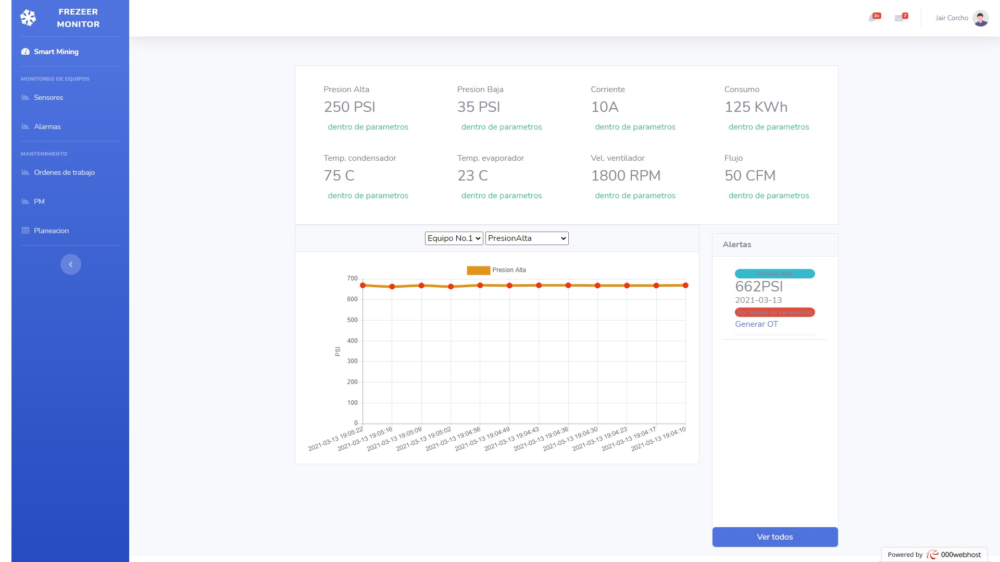
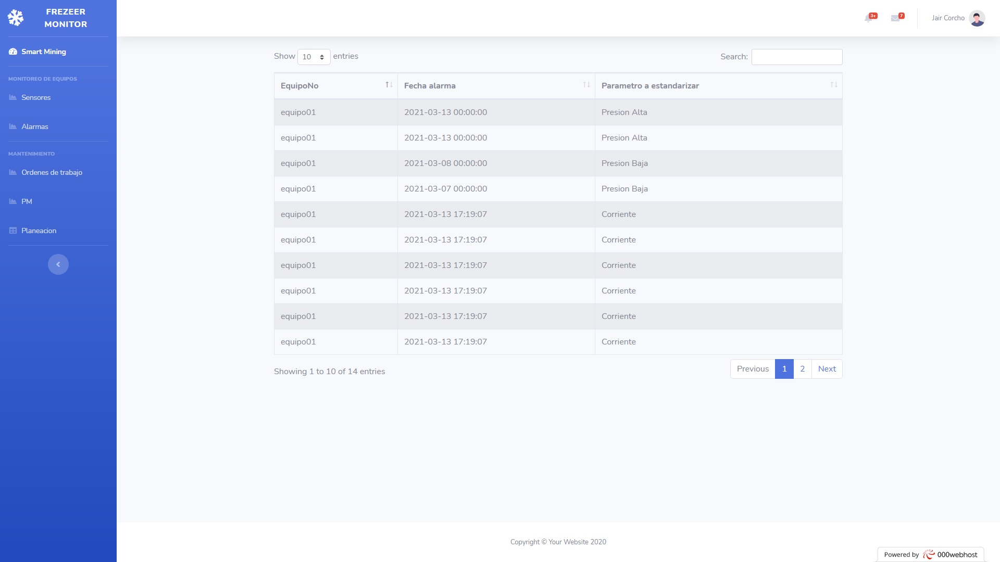
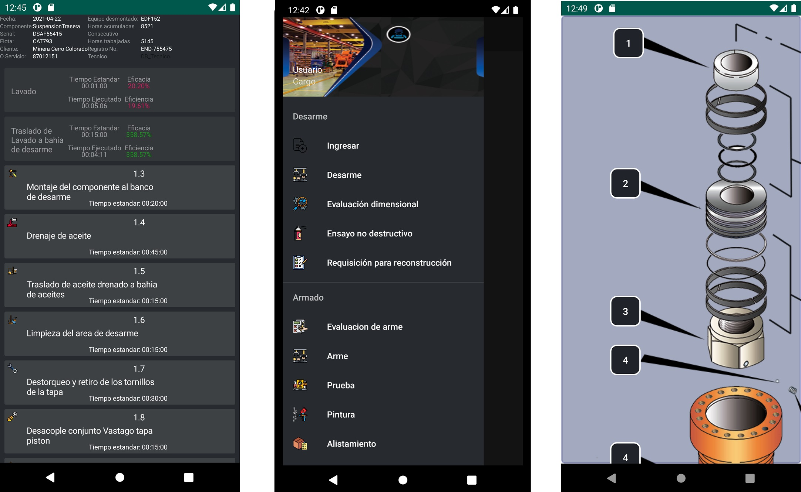
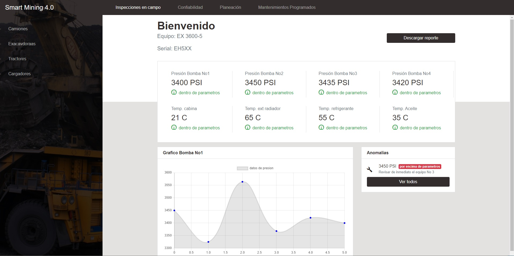

Achievements
Development of web application for inspection and maintenance of refrigeration equipment
Construction of web application for monitoring refrigerators
Monitor refrigeration equipment pressures, temperatures and other parameters in real time through a Wi-Fi network
Generate alerts in the event that any refrigeration equipment is operating in out-of-parameters conditions.
Generate work orders for preventive and corrective maintenance
Generate indicators of effectiveness of technical staff and efficiency of the process of the executed work orders.
With a database, track traceability and generate KPI indicators to evaluate the reliability of the equipment.


Application development for component inspection and maintenance
Android application development with the following functions:
Insert data of components and equipment for inspection to the system with MySQL databases.
Generation of work list to assigned personnel measuring effectiveness and efficiency in real time.
Displays in 3D and in color to report failures and keep the traceability of each part of the component in order to record the life cycle
operational
Automatic registration of work orders executed by technical staff
Generate reports of inspections and maintenance carried out.
Calculate indicators of effectiveness of technical staff and efficiency of the process of the work orders executed.

Development of application for inspection and maintenance of mining equipment
Construction application for web and Android with the following functions:
The daily reports and the Backlogs made by the technical staff were generated on site by
the application; Together with the Backlog, an exploded view was created that untually indicated the affected components.
Daily reports and backlogs generated in the shift are stored in an online database,
where the supervisor with the application connects to see the relationship of the daily report and the Backlogs with the inspected equipment,
validating the information to generate the pdf formats with a click and send them to planning through an email.
Generate automatic alerts if any component is completing its operating cycle and program the
preventive maintenance to avoid a down of the equipment.
View traceability and Generate KPI indicators to evaluate the reliability of the components and
of the team itself.
 enlace a vista